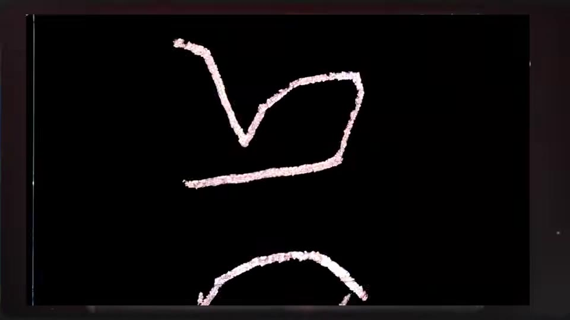
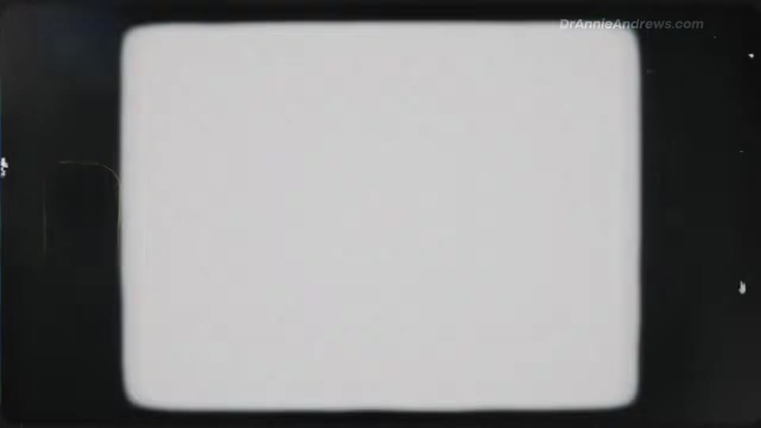
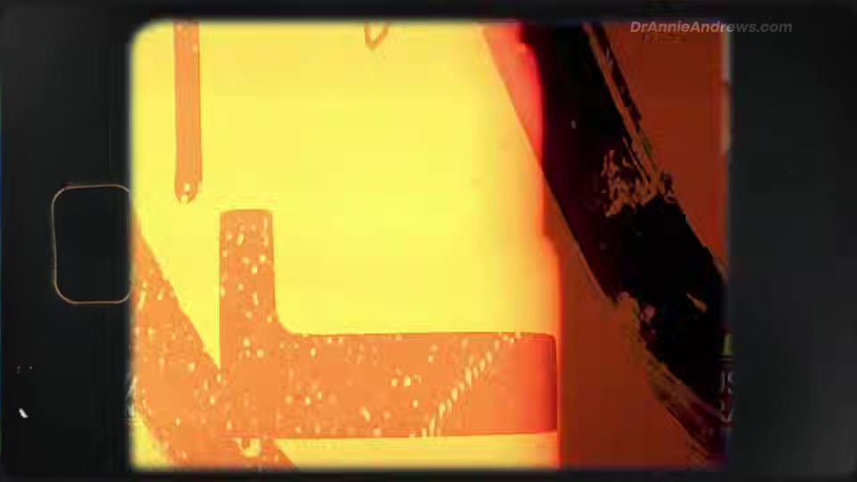
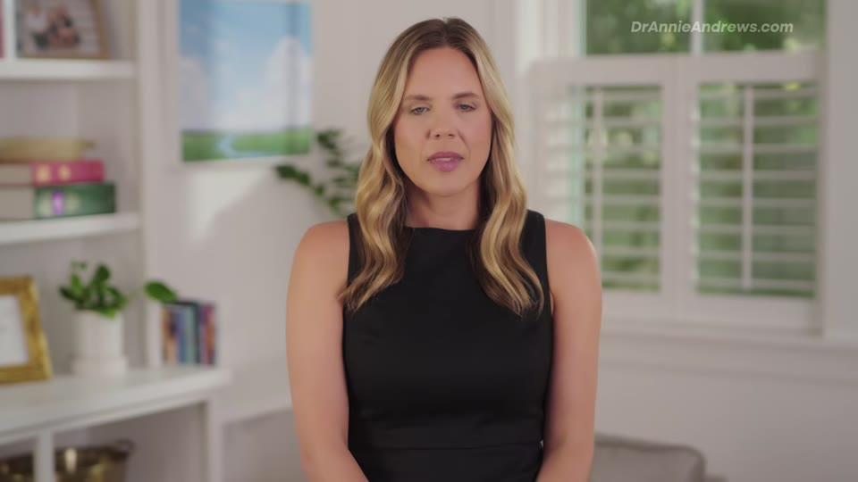
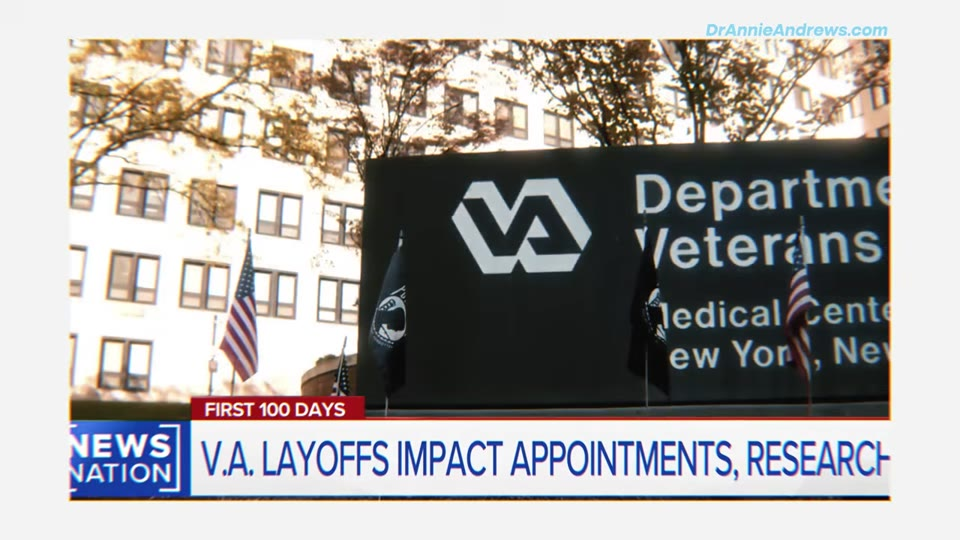

Annie Andrews Launch Video: "Unafraid"AND_launch_J8wMNLaSNW4
These frames are scene-change samples, not a shot-by-shot edit. Face counts come from YuNet detection at 960 px width; the archive does not caption what is happening in them.














